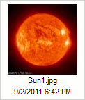

Przycisk Ustawienia (Settings) dost臋pny w pasku narz臋dzi CKFindera otwiera panel ustawie艅, w kt贸rym mo偶na skonfigurowa膰 CKFindera i dostosowa膰 ustawienia programu do w艂asnych potrzeb.
Poni偶szy rysunek prezentuje panel ustawie艅 CKFindera, kt贸ry otwiera si臋 po klikni臋ciu przycisku paska narz臋dzi.
Wszystkie ustawienia zapisywane s膮 automatycznie za pomoc膮 "cookies" przegl膮darki internetowej. "Cookies" ("ciasteczka") to niewielkie pliki przechowuj膮ce na Twoim komputerze prywatne ustawienia konfiguracyjne dla okre橹lonych witryn internetowych.
W celu zamkni臋cia (ukrycia) panelu ustawie艅 nale偶y nacisn膮膰 przycisk Zamknij (Close) lub klikn膮膰 ponownie przycisk Ustawienia na pasku narz臋dzi.
Wszystkie opcje konfiguracyjne odnosz膮 si臋 do panelu plik贸w i kontroluj膮 spos贸b wy橹wietlania plik贸w w CKFinderze. Panel plik贸w reaguje na wszelkie zmiany wprowadzone w panelu ustawie艅 natychmiast.
Ustawia tryb widoku panelu plik贸w:
Decyduje o ilo橹ci informacji wy橹wietlanych w panelu plik贸w. Nast臋puj膮ce opcje mog膮 by膰 w艂膮czone lub wy艂膮czone:
Je橹li korzystasz z trybu wy橹wietlania Miniaturki, mo偶esz odznaczy膰 wszystkie opcje. W widoku Listy nazwa pliku zawsze b臋dzie wy橹wietlana.
Poni偶szy rysunek prezentuje r贸偶ne opcje wy橹wietlania w trybie Miniaturki.
 |
 |
 |
 |
Ustawia porz膮dek wy橹wietlania plik贸w. Dost臋pne s膮 nast臋puj膮ce opcje: